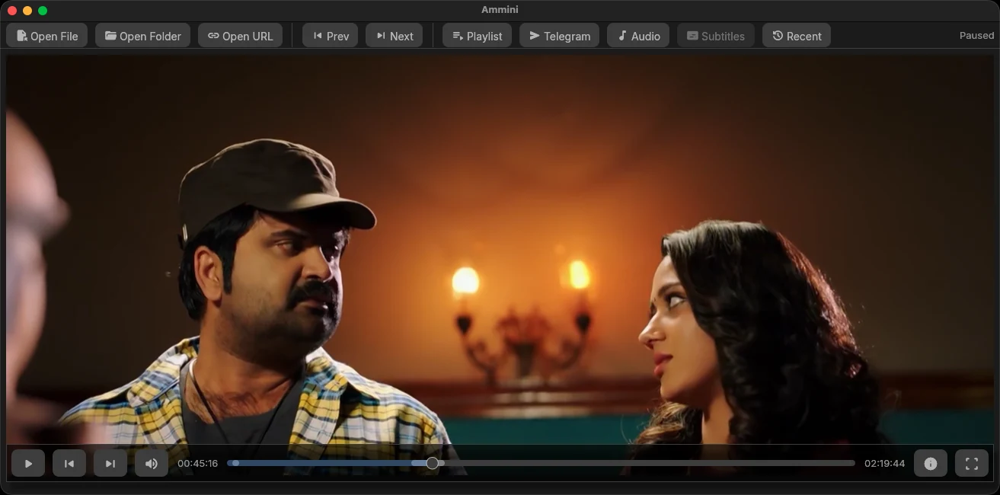

Your videos, wherever they live
Ammini is a cozy, keyboard-first video player for macOS and Windows that streams straight out of your Telegram chats — with a smart disk cache, instant seeking, and none of the fuss.
Latest build from GitHub Releases · no account needed for local files
The build is ad-hoc signed and not notarized, so Gatekeeper may block it — the app can just bounce in the Dock. Right-click the app → Open, or clear the quarantine flag:
sudo xattr -dr com.apple.quarantine /Applications/Ammini.app
Why Ammini
A little player that takes video seriously
Built on mpv and egui, wrapped in a native macOS-style interface that stays out of your movie's way.
Telegram is your library
Sign in once and play any video from your chats — no downloads, no waiting. Your saved-videos folder becomes a streaming service.
Smart disk cache
Watched parts are cached in 512 KiB blocks on disk and survive restarts. Reopen a video and it picks up right where the bytes left off.
Instant seeking
Arrow keys and skip buttons seek by keyframe, so scrubbing stays snappy even over a streaming connection.
Resume everywhere
Quit whenever you like. Ammini remembers your position per file — local or Telegram — and offers to pick up where you left off.
Tracks & subtitles
Switch audio and subtitle tracks on the fly from a clean dropdown, with human-friendly labels for every stream.
Keyboard first
Space, F, M, arrows — everything is at your fingertips. The video owns the keys it needs and hands the rest back to you.
The movies people send you, playable in one click
Ammini streams Telegram videos through a private local server with full byte-range support, so mpv can seek like it would on a local file. A disk-backed block cache keeps what you've watched — reopen any video and it resumes from cache instead of re-downloading.
- 1 Sign in to Telegram One-time phone login from the sidebar. Your session stays on this machine.
- 2 Pick a chat Browse your dialogs right inside Ammini — saved videos, channels, groups.
- 3 Press play The video streams through a local proxy with byte-range support. It just plays.
At your fingertips
Shortcuts that feel like home
…plus a full playlist, recents menu, and per-file resume.
Grab the latest build
One download, no installer hoops. macOS (Apple Silicon) and Windows builds live on the GitHub releases page.